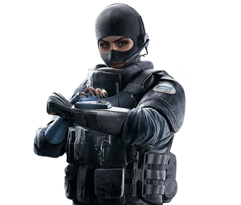

Emmanuelle Pichon, codenamed "Twitch"
If you have a few spare hours, I'd love to
share the details of how this device is a masterpiece of design. Quadruple independent gear boxes enabling zero to twenty in under four seconds, ten kilometers of internal wiring, eleven hundred expertly machined hand-assembled components, flawless control at over 300 meters... But all my team needs to know is, 'Does it do the job, or doesn't it?' And let me tell you right now - it does the job.
Gameplay Description
1. A Medium Health Operator, Thermite is equipped with two Brimstone BC-3 Exothermic Charges. These charges can breach through any Reinforced Wall within three seconds of activation.
Exothermic Charges can be deployed on any destructible surface, including reinforced ones.
Exothermic Charges have a roughly 3 second deployment animation, longer than that of the normal Breach Charges.
If there were heartbeats when affected by the EMP blast, the heartbeat icon will stay in place for the disabled duration. Exothermic Charges are remotely activated, so they cannot be activated if they or Thermite are in the effective range of Mute's Signal Disruptors. Deployed Exothermic Charges are destroyable by any source of damage, including electricity from Bandit's Shock Wires or Kaid's Electroclaws.
3. When activated, Exothermic Charges play a roughly 3 second "heat up" animation and then explodes destroying surfaces, even reinforced ones, in a large area.
During this "heat up" time, the Exothermic Charges release visible sparks on both sides of the wall, and makes a loud sizzling noise, giving Defenders inside a clear warning to the breach.
The explosion radius on the Exothermic Charges is significantly larger than an average breaching charge. This explosion radius of 4 meters can also take out nearby walls or hatches when used properly.
The lethal blast radius ends at 3-4 meters. Beyond five meters, the Exothermic Charges don't do any damage.
Device Description
Sets an exothermic charge that destroys reinforced walls.
Developed by FBI SWAT engineers, the BRIMSTONE was designed to breach reinforced locations utilizing a compact and portable explosive load that can deliver maximum force and destruction. As can be seen in the game, the charge first burns through the barrier and then blows that cut piece up with C4. The BRIMSTONE was effectively utilized in the field during a rescue operation in which several people were held hostage in a fortified farmhouse. (Which can possibly be a hint of the operation taking place in Oregon.) The destructive power of the BRIMSTONE allowed agents to breach a reinforced metal security door at the back of the house.
Thermite's Brimstone was one of the first devices tested in the new lab. It's the same way he has to be the first through any reinforced walls. Always has to be first.:) On the day of testing, Specialist Trace was busy developing additional prototypes as he did during Operation Chimera and wasn't immediately available. Since I'm very familiar with the Exothermic BC-3 Charge and have an expertise in explosive ordnance, I volunteered to conduct the evaluation. Our tests included adjusting the mixture stages to see if we could achieve stronger and more concentrated "melt". The results helped us clearly determine the chemical reaction times at peak temps. Our tests on the Brimstone BC-3 Exothermic Charge went well and produced some surprising results. Some were enough of a surprise to lure Thermite to join us (that was fun). We've been able to book extra time to apply some of the data to his prototypes. I'll file another entry as soon as we're done.